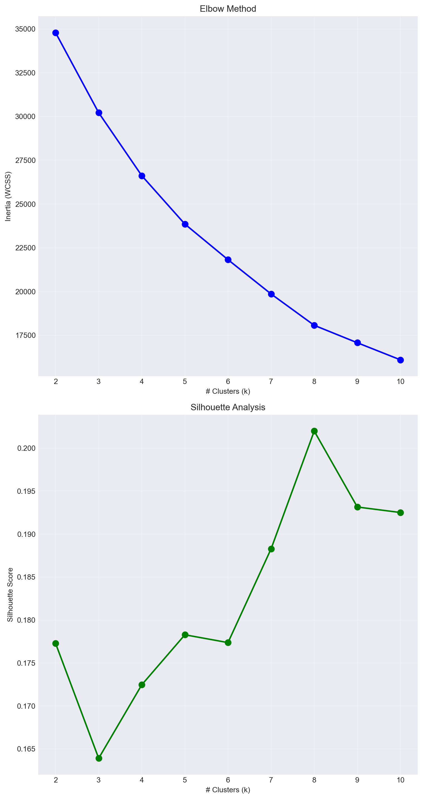

import pandas as pd
import numpy as np
import matplotlib.pyplot as plt
import seaborn as sns
import warnings
from scipy import stats
from sklearn.preprocessing import StandardScaler
from sklearn.cluster import KMeans
from sklearn.metrics import silhouette_score
from sklearn.decomposition import PCACaso 2: Análisis de Desempeño Estudiantil en Matemáticas
Análisis exploratorio de los datos
1. Librerías y configuraciones
Para la realización de este EDA, utilizaremos las siguientes librerías:
Y configuraremos los siguientes parámetros:
warnings.filterwarnings('ignore')
plt.style.use('seaborn-v0_8-darkgrid')
sns.set_palette("husl")
plt.rcParams['figure.figsize'] = (15, 10)2. Carga de datos
Cargaremos los datos del archivo Student_Performance.csv
df = pd.read_csv('https://raw.githubusercontent.com/daramireh/simonBolivarCienciaDatos/refs/heads/main/Student_Performance.csv')
print(df.shape)
df.head()(10000, 6)| Hours Studied | Previous Scores | Extracurricular Activities | Sleep Hours | Sample Question Papers Practiced | Performance Index | |
|---|---|---|---|---|---|---|
| 0 | 7 | 99 | Yes | 9 | 1 | 91.0 |
| 1 | 4 | 82 | No | 4 | 2 | 65.0 |
| 2 | 8 | 51 | Yes | 7 | 2 | 45.0 |
| 3 | 5 | 52 | Yes | 5 | 2 | 36.0 |
| 4 | 7 | 75 | No | 8 | 5 | 66.0 |
3. Exploración de los datos
En esta sección, análizaremos los datos de forma que podamos entender su estructura, tendencias y características.
3.1 Diccionario de datos
data_dictionary = {}
print(f"\n{'Column':<40} {'Type':<15} {'Unique':<10} {'Nulls':<10} {'% Nulls'}")
for col in df.columns:
dtype = str(df[col].dtype)
unique = df[col].nunique()
nulls = df[col].isnull().sum()
null_pct = (nulls / len(df)) * 100
data_dictionary[col] = {
"dtype": dtype,
"unique": int(unique),
"nulls": int(nulls),
"% nulls": round(float(null_pct), 2),
"min": float(df[col].min()) if df[col].dtype in ['int64', 'float64'] else None,
"max": float(df[col].max()) if df[col].dtype in ['int64', 'float64'] else None,
"mean": float(df[col].mean()) if df[col].dtype in ['int64', 'float64'] else None,
"median": float(df[col].median()) if df[col].dtype in ['int64', 'float64'] else None,
"std": float(df[col].std()) if df[col].dtype in ['int64', 'float64'] else None,
"examples": df[col].head(3).tolist() if dtype == 'object' else None
}
print(f"{col:<40} {dtype:<15} {unique:<10} {nulls:<10} {null_pct:.2f}%")
Column Type Unique Nulls % Nulls
Hours Studied int64 9 0 0.00%
Previous Scores int64 60 0 0.00%
Extracurricular Activities object 2 0 0.00%
Sleep Hours int64 6 0 0.00%
Sample Question Papers Practiced int64 10 0 0.00%
Performance Index float64 91 0 0.00%3.2 Transformaciones de los datos
Con lo observado en el inciso anterior, podemos afirmar que los datos tienen una buena calidad en los datos ya que no hay valores nulos y los tipos de datos son consistentes.
Validación de datos duplicados
Cuando pensamos en transformar los datos, es importante considerar la cantidad de datos duplicados. Veamos si nuestro dataset tiene datos duplicados y si se deben eliminar.
print(f"Duplicates: {df.duplicated().sum()} rows")Duplicates: 127 rowsEsta cantidad de datos duplicados pueden ocurrir por varias razones, pero una muy clara es que, dado que son datos sobre el rendimiento académico de estudiantes, es posible que dos estudiantes o más puedan tener métodos similares de estudio.
Sin embargo, aunque el porcentaje de datos duplicados (1.27%) sea bajo debemos comprobar con analítica descriptiva si estos afectan significativamente antes y después de eliminarlos.
df.describe()| Hours Studied | Previous Scores | Sleep Hours | Sample Question Papers Practiced | Performance Index | |
|---|---|---|---|---|---|
| count | 10000.000000 | 10000.000000 | 10000.000000 | 10000.000000 | 10000.000000 |
| mean | 4.992900 | 69.445700 | 6.530600 | 4.583300 | 55.224800 |
| std | 2.589309 | 17.343152 | 1.695863 | 2.867348 | 19.212558 |
| min | 1.000000 | 40.000000 | 4.000000 | 0.000000 | 10.000000 |
| 25% | 3.000000 | 54.000000 | 5.000000 | 2.000000 | 40.000000 |
| 50% | 5.000000 | 69.000000 | 7.000000 | 5.000000 | 55.000000 |
| 75% | 7.000000 | 85.000000 | 8.000000 | 7.000000 | 71.000000 |
| max | 9.000000 | 99.000000 | 9.000000 | 9.000000 | 100.000000 |
df.drop_duplicates().describe()| Hours Studied | Previous Scores | Sleep Hours | Sample Question Papers Practiced | Performance Index | |
|---|---|---|---|---|---|
| count | 9873.000000 | 9873.000000 | 9873.000000 | 9873.000000 | 9873.000000 |
| mean | 4.992100 | 69.441102 | 6.531652 | 4.583004 | 55.216651 |
| std | 2.589081 | 17.325601 | 1.697683 | 2.867202 | 19.208570 |
| min | 1.000000 | 40.000000 | 4.000000 | 0.000000 | 10.000000 |
| 25% | 3.000000 | 54.000000 | 5.000000 | 2.000000 | 40.000000 |
| 50% | 5.000000 | 69.000000 | 7.000000 | 5.000000 | 55.000000 |
| 75% | 7.000000 | 85.000000 | 8.000000 | 7.000000 | 70.000000 |
| max | 9.000000 | 99.000000 | 9.000000 | 9.000000 | 100.000000 |
Como podemos observar, la media y la desviación estándar de los datos duplicados es muy similar a la media de los datos sin duplicados, por lo que no afectan significativamente los datos.
Tipos de variables
Otro tipo de de transformación que es importante a la hora de trabajar con modelos de ML son las variables categóricas. Estas variables pueden ser binarias o no binarias. En el caso de las variables binarias, podemos convertirlas en variables numéricas (0 o 1). En el caso de las variables no binarias, podemos convertirlas en variables numéricas utilizando técnicas como one-hot encoding.
De nuestro análisis podemos notar que Extracurricular Activities es una variable categórica cuyo valor puede ser Yes o No. Por lo tanto, convertiremos esta variable en una variable binaria (0 o 1).
df_transf = df.copy()
df_transf['Extracurricular Activities'] = df_transf['Extracurricular Activities'].map({'Yes': 1, 'No': 0})Además, si queremos realizar un modelo de clasificación, es importante tener una variable objetivo categórica. Teniendo en cuenta que nuestra variable target es Performance Index, haremos una transformación para obtener una variable categórica que identifique si un estudiante tiene un rendimiento bajo, lo que permitiría a las escuelas identificar estudiantes en riesgos académicos.
per_25 = df_transf['Performance Index'].quantile(0.25)
df_transf['Low Performance'] = (df_transf['Performance Index'] < per_25).astype(int)De esta forma, un estudiante tendrá un bajo rendimiento si su índice está dentro del 25% más bajo de la población, lo que permite identificar el cuartil de estudiantes con mayor riesgo académico.
Escalado de variables
Dado que el objetivo de este análisis es predecir el rendimiento académico de los estudiantes, es importante escalar las variables numéricas para que todas tengan la misma escala y para obtener una mejor convergencia de algoritmos.
En este caso, utilizaremos el método de escalado estándar (StandardScaler) para normalizar las variables numéricas que consiste en restar la media y dividir por la desviación estándar.
features_to_scale = [
'Hours Studied', 'Previous Scores', 'Sleep Hours',
'Sample Question Papers Practiced'
]
scaler = StandardScaler()
df_transf[features_to_scale] = scaler.fit_transform(df_transf[features_to_scale])Lo que nos deja con
df_transf[features_to_scale].describe()| Hours Studied | Previous Scores | Sleep Hours | Sample Question Papers Practiced | |
|---|---|---|---|---|
| count | 1.000000e+04 | 1.000000e+04 | 1.000000e+04 | 1.000000e+04 |
| mean | 1.016076e-16 | -1.286082e-16 | 1.275424e-16 | -1.680434e-16 |
| std | 1.000050e+00 | 1.000050e+00 | 1.000050e+00 | 1.000050e+00 |
| min | -1.542149e+00 | -1.697914e+00 | -1.492294e+00 | -1.598526e+00 |
| 25% | -7.697033e-01 | -8.906381e-01 | -9.025945e-01 | -9.009822e-01 |
| 50% | 2.742182e-03 | -2.570019e-02 | 2.768051e-01 | 1.453332e-01 |
| 75% | 7.751877e-01 | 8.969003e-01 | 8.665048e-01 | 8.428768e-01 |
| max | 1.547633e+00 | 1.704176e+00 | 1.456205e+00 | 1.540420e+00 |
3.3 Análisis descriptivo de las variables
Esta descripción de las variables se interpretará con el análisis descriptivo de las variables antes de la transformación pues, estas transformaciones no afectan la distribución de las variables pero si su interpretabilidad.
Para las variables categóricas tenemos:
print(df_transf['Extracurricular Activities'].value_counts())
print(df_transf['Low Performance'].value_counts())Extracurricular Activities
0 5052
1 4948
Name: count, dtype: int64
Low Performance
0 7618
1 2382
Name: count, dtype: int64Features
Hours StudiedLos estudiantes estudian entre 1 y 9 horas por semana, con un promedio de 4.99 horas (std=2.59). La distribución muestra que:
- El 50% de los estudiantes estudia 5 horas o menos (mediana=5)
- El 25% estudia 3 horas o menos (Q1)
- El 25% estudia 7 horas o más (Q3)
Hallazgo: Existe una alta variabilidad en los hábitos de estudio entre estudiantes (coeficiente de variación del 52%), lo que sugiere diferencias significativas en la dedicación académica y podría ser un factor diferenciador en el rendimiento.
Previous ScoresLos puntajes académicos previos oscilan entre 40 y 99 puntos, con una media de 69.45 (std=17.34). La distribución indica:
- El 50% tiene puntajes entre 54 y 85 puntos (IQR=31)
- El 25% tiene puntajes inferiores a 54 puntos
- Mediana de 69 puntos, similar a la media (distribución simétrica)
Hallazgo: La base académica previa es heterogénea con una dispersión considerable (CV=25%). Esto sugiere que el rendimiento histórico será un predictor importante, ya que estudiantes con bases débiles (<54) podrían estar en mayor riesgo.
Extracurricular ActivitiesVariable categórica binaria con distribución:
- 49.48% participa en actividades extracurriculares (Yes=1)
- 50.52% no participa (No=0)
Hallazgo: El dataset está perfectamente balanceado en esta variable, lo que permitirá analizar de forma equitativa el impacto de las actividades extracurriculares en el rendimiento académico sin sesgos de muestreo.
Sleep HoursSleep Hours (Horas de Sueño) Las horas de sueño promedian 6.53 horas diarias (std=1.70), con un rango de 4 a 9 horas:
- El 50% duerme entre 5 y 8 horas (IQR=3)
- Mediana de 7 horas
- Distribución concentrada alrededor de 6-7 horas
Hallazgo: La mayoría de estudiantes duerme en el rango recomendado para adolescentes (7-9 horas), aunque existe un 25% que duerme 5 horas o menos, lo que podría afectar negativamente su capacidad cognitiva y rendimiento académico.
Sample Question Papers PracticedLos estudiantes practican en promedio 4.58 ejercicios (std=2.87), con un rango de 0 a 9:
- El 50% practica entre 2 y 7 ejercicios (IQR=5)
- Mediana de 5 ejercicios
- Alta variabilidad (CV=63%)
Hallazgo: Existe una dispersión considerable en la práctica de ejercicios, con algunos estudiantes sin práctica alguna (mínimo=0) y otros altamente comprometidos (máximo=9). Esta variable muestra la mayor variabilidad relativa, lo que la convierte en un potencial diferenciador clave del rendimiento.
Target
Performance IndexEl rendimiento académico presenta una media de 55.22 puntos (std=19.21), con un rango de 10 a 100 puntos:
- Percentil 25: 40 puntos (bajo rendimiento)
- Percentil 50: 55 puntos (mediana)
- Percentil 75: 71 puntos (alto rendimiento)
- Rango intercuartílico: 31 puntos
Hallazgo principal: La alta dispersión (std=19.21, CV=35%) indica que el rendimiento académico es muy variable entre estudiantes. La distribución es aproximadamente simétrica (media ≈ mediana), lo que sugiere que no hay sesgos extremos hacia rendimientos muy bajos o muy altos. Esta variabilidad confirma la necesidad de identificar factores predictores para explicar estas diferencias.
Low PerformanceVariable binaria derivada del percentil 25 del Performance Index:
- 25% de estudiantes en riesgo académico (Low Performance = 1, PI < 40)
- 75% con rendimiento adecuado (Low Performance = 0, PI ≥ 40)
Hallazgo: 1 de cada 4 estudiantes requiere intervención académica, lo que representa un desafío significativo para las instituciones educativas. Esta proporción justifica el desarrollo de modelos predictivos para identificación temprana de estudiantes en riesgo.
3.4 Prueba de Hipótesis
Para responder la pregunta planteada: “¿Existen diferencias estadísticas entre el puntaje final (Performance Index) y la asistencia a actividades extracurriculares?” debemos realizar una prueba de hipótesis para comparar las medias de ambos grupos. De esta forma, con un nivel de significancia \(\alpha = 0.05\), tenemos:
\[ \begin{aligned} H_0 &: \mu_1 = \mu_2 \\ H_1 &: \mu_1 \neq \mu_2 \end{aligned} \]
donde \(\mu_1\) y \(\mu_2\) representan las medias de los puntajes de los estudiantes que asisten y no asisten a actividades extracurriculares, respectivamente.
Análisis por grupo
with_extra = df_transf[df_transf['Extracurricular Activities'] == 1]['Performance Index']
without_extra = df_transf[df_transf['Extracurricular Activities'] == 0]['Performance Index']
print(with_extra.describe())
print(without_extra.describe())count 4948.000000
mean 55.700889
std 19.264416
min 11.000000
25% 41.000000
50% 55.000000
75% 71.000000
max 100.000000
Name: Performance Index, dtype: float64
count 5052.000000
mean 54.758511
std 19.152068
min 10.000000
25% 40.000000
50% 55.000000
75% 70.000000
max 99.000000
Name: Performance Index, dtype: float64Verificación de supuestos
Para la prueba de hipótesis es necesario verificar que las muestras sean independientes y que las varianzas sean iguales. De esta forma, debemos realizar una prueba de normalidad (Shapiro-Wilk) y una prueba de igualdad de varianzas (Levene).
print(f"Mean Difference: {with_extra.mean() - without_extra.mean():.4f}")Mean Difference: 0.9424Prueba de normalidad
stat_with, p_with = stats.shapiro(with_extra)
stat_without, p_without = stats.shapiro(without_extra)
print("Shapiro-Wilk Test:")
print(f"With Extra: {stat_with:.6f}, p-value: {p_with:.6f}")
print(f"Without Extra: {stat_without:.6f}, p-value: {p_without:.6f}")Shapiro-Wilk Test:
With Extra: 0.983235, p-value: 0.000000
Without Extra: 0.984866, p-value: 0.000000Prueba de igualdad de varianzas
stat, p = stats.levene(with_extra, without_extra)
print("Levene Test:")
print(f"Statistic: {stat:.6f}, p-value: {p:.6f}")Levene Test:
Statistic: 0.427227, p-value: 0.513368Dado que los datos no cumplen con el supuesto de normalidad, deberíamos usar una prueba no paramétrica como la U de Mann-Whitney. Sin embargo, dado el tamaño de las muestras (\(n_1 = 4948, n_2 = 5052\)), por el teorema central del límite podemos usar la prueba paramétrica t-test.
Prueba t
stat, p = stats.ttest_ind(with_extra, without_extra)
print("T-Test:")
print(f"Statistic: {stat:.6f}, p-value: {p:.6f}")T-Test:
Statistic: 2.452987, p-value: 0.014184Prueba U de Mann-Whitney
stat, p = stats.mannwhitneyu(with_extra, without_extra)
print("Mann-Whitney U Test:")
print(f"Statistic: {stat:.6f}, p-value: {p:.6f}")Mann-Whitney U Test:
Statistic: 12814910.500000, p-value: 0.028425Con base a los resultados obtenidos (p-valores < 0.05), podemos rechazar la hipótesis nula y concluir que existen diferencias en el Performance Index entre estudiantes que asisten y no asisten a actividades extracurriculares.
Los estudiantes que participan en actividades extracurriculares presentan un rendimiento académico significativamente superior a aquellos que no participan (aproximadamente 0.94 puntos más). Aunque la diferencia es estadísticamente significativa, es importante notar que la magnitud es relativamente pequeña (menos de 1 punto), lo que sugiere que las actividades extracurriculares tienen un impacto positivo pero modesto en el rendimiento académico.
Clustering de estudiantes según sus características
Para identificar los grupos o conglomerados de estudiantes, se aplicará el método del codo y el análisis de silueta para determinar el número óptimo de clusters.
cluster_features = features_to_scale + ['Extracurricular Activities']
X_cluster = df_transf[cluster_features].copy()
inertias = []
silhouette_scores = []
K_range = range(2, 11)
for k in K_range:
kmeans = KMeans(n_clusters=k, random_state=42, n_init=10)
kmeans.fit(X_cluster)
inertias.append(kmeans.inertia_)
labels = kmeans.predict(X_cluster)
score = silhouette_score(X_cluster, labels)
silhouette_scores.append(score)
print("Silhouette Scores:")
for k, score in zip(K_range, silhouette_scores):
print(f"k={k}: {score:.4f}")Silhouette Scores:
k=2: 0.1773
k=3: 0.1639
k=4: 0.1725
k=5: 0.1783
k=6: 0.1774
k=7: 0.1883
k=8: 0.2020
k=9: 0.1932
k=10: 0.1925fig, axes = plt.subplots(2, 1, figsize=(8, 15))
ax1 = axes[0]
ax1.plot(K_range, inertias, 'bo-', linewidth=2, markersize=8)
ax1.set_xlabel('# Clusters (k)')
ax1.set_ylabel('Inertia (WCSS)')
ax1.set_title('Elbow Method')
ax1.grid(True, alpha=0.3)
ax2 = axes[1]
ax2.plot(K_range, silhouette_scores, 'go-', linewidth=2, markersize=8)
ax2.set_xlabel('# Clusters (k)')
ax2.set_ylabel('Silhouette Score')
ax2.set_title('Silhouette Analysis')
ax2.grid(True, alpha=0.3)
plt.tight_layout()
plt.show()
Como podemos observar, el número óptimo de clusters es 4, pues aporta un balance entre la simplicidad y calidad de los grupos identificados. Presenta un score de silhouette aceptable (0.1725), similar al obtenido con un número de clusteres mayor. Además permite identificar perfiles claros: bajo, medio-bajo, medio-alto, alto rendimiento por lo que facilita la toma de decisiones y la implementación de intervenciones educativas.
optimal_k = 4
kmeans_final = KMeans(n_clusters=optimal_k, random_state=42, n_init=10)
df_transf['Cluster'] = kmeans_final.fit_predict(X_cluster)
print(f"Student distribution by cluster:")
print(df_transf['Cluster'].value_counts().sort_index())Student distribution by cluster:
Cluster
0 2564
1 2454
2 2533
3 2449
Name: count, dtype: int64for i in range(optimal_k):
cluster_data = df[df_transf['Cluster'] == i]
print(f"Cluster {i} (n = {len(cluster_data)} students, {len(cluster_data)/len(df)*100:.1f}%)")
print(f"Hours studied: {cluster_data['Hours Studied'].mean():.2f} hours/week")
print(f"Previous scores: {cluster_data['Previous Scores'].mean():.2f} points")
print(f"Sleep hours: {cluster_data['Sleep Hours'].mean():.2f} hours/day")
print(f"Sample questions practiced: {cluster_data['Sample Question Papers Practiced'].mean():.2f} exercises")
print(f"Performance index: {cluster_data['Performance Index'].mean():.2f} points")
with_extra_pct = (cluster_data['Extracurricular Activities'] == 'Yes').sum() / len(cluster_data) * 100
print(f"Extracurricular activities: {with_extra_pct:.1f}%")
perf_mean = cluster_data['Performance Index'].mean()
if perf_mean >= df['Performance Index'].quantile(0.75):
category = "high"
elif perf_mean >= df['Performance Index'].quantile(0.50):
category = "medium-high"
elif perf_mean >= df['Performance Index'].quantile(0.25):
category = "medium-low"
else:
category = "low"
print(f"Performance level: {category}")
print()Cluster 0 (n = 2564 students, 25.6%)
Hours studied: 6.97 hours/week
Previous scores: 69.54 points
Sleep hours: 4.88 hours/day
Sample questions practiced: 4.76 exercises
Performance index: 60.19 points
Extracurricular activities: 51.1%
Performance level: medium-high
Cluster 1 (n = 2454 students, 24.5%)
Hours studied: 7.24 hours/week
Previous scores: 69.23 points
Sleep hours: 8.10 hours/day
Sample questions practiced: 4.72 exercises
Performance index: 62.23 points
Extracurricular activities: 48.1%
Performance level: medium-high
Cluster 2 (n = 2533 students, 25.3%)
Hours studied: 2.96 hours/week
Previous scores: 69.36 points
Sleep hours: 6.57 hours/day
Sample questions practiced: 1.72 exercises
Performance index: 48.77 points
Extracurricular activities: 48.6%
Performance level: medium-low
Cluster 3 (n = 2449 students, 24.5%)
Hours studied: 2.77 hours/week
Previous scores: 69.65 points
Sleep hours: 6.65 hours/day
Sample questions practiced: 7.23 exercises
Performance index: 49.69 points
Extracurricular activities: 50.1%
Performance level: medium-low
pca = PCA(n_components=2)
X_pca = pca.fit_transform(X_cluster)
print(f"Explained variance:")
print(f"PC1: {pca.explained_variance_ratio_[0]*100:.2f}%")
print(f"PC2: {pca.explained_variance_ratio_[1]*100:.2f}%")
print(f"Total: {sum(pca.explained_variance_ratio_)*100:.2f}%")Explained variance:
PC1: 23.97%
PC2: 23.80%
Total: 47.76%fig, axes = plt.subplots(2, 1, figsize=(8, 12))
ax1 = axes[0]
scatter = ax1.scatter(
X_pca[:, 0], X_pca[:, 1],
c=df_transf['Cluster'], cmap='viridis',
alpha=0.6, edgecolors='black', s=30
)
ax1.set_xlabel(f'PC1 ({pca.explained_variance_ratio_[0]*100:.1f}%)')
ax1.set_ylabel(f'PC2 ({pca.explained_variance_ratio_[1]*100:.1f}%)')
ax1.set_title('Clusters on PCA')
ax1.grid(True, alpha=0.3)
plt.colorbar(scatter, ax=ax1, label='Cluster')
centers_pca = pca.transform(kmeans_final.cluster_centers_)
ax1.scatter(
centers_pca[:, 0], centers_pca[:, 1],
c='red', marker='X', s=300, edgecolors='black',
linewidths=2, label='Centroids'
)
ax1.legend()
ax2 = axes[1]
cluster_counts = df_transf['Cluster'].value_counts().sort_index()
colors = plt.cm.viridis(np.linspace(0, 1, optimal_k))
ax2.bar(
cluster_counts.index, cluster_counts.values,
color=colors, edgecolor='black', alpha=0.7
)
ax2.set_xlabel('Cluster')
ax2.set_ylabel('# Students')
ax2.set_title('Distribution of Students by Cluster')
ax2.set_xticks(range(optimal_k))
ax2.grid(True, alpha=0.3, axis='y')
for i, val in enumerate(cluster_counts.values):
ax2.text(i, val, str(val), ha='center', va='bottom', fontweight='bold')
plt.tight_layout()
plt.show()